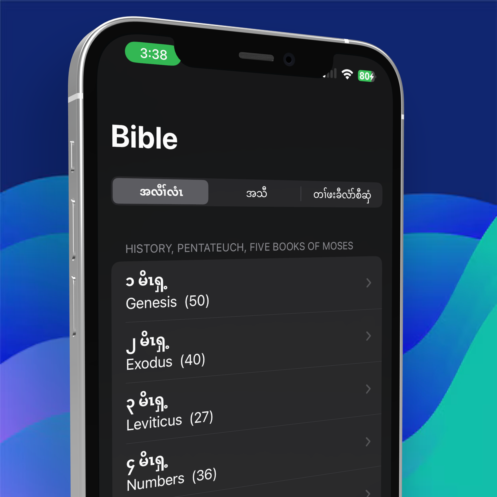

ကညီလံာ်စီဆှံ App
Thy word is a lamp unto my feet, and a light unto my path - Psalm 119:105
နကလုၢ်ကထါန့ၢ်မ့ၢ် မ့ၢ်အူဒၢတဖျၢၣ်လၢယခီၣ်အဂီၢ် ဒီးတၢ်ကပီၤတဖျၢၣ်လၢယကျဲအဂီၢ်လီၤ - စံးထီၣ်ပတြၢၤ ၁၁၉း၁ဝ၅


Thy word is a lamp unto my feet, and a light unto my path - Psalm 119:105
နကလုၢ်ကထါန့ၢ်မ့ၢ် မ့ၢ်အူဒၢတဖျၢၣ်လၢယခီၣ်အဂီၢ် ဒီးတၢ်ကပီၤတဖျၢၣ်လၢယကျဲအဂီၢ်လီၤ - စံးထီၣ်ပတြၢၤ ၁၁၉း၁ဝ၅

Select a feature to see how it works:
“Grateful and appreciation for made available for all kanyaw people I want to appreciation for made this available in kanyaw version, beside that is also very great and helpful for all kanyaw people to learn and understand the lord more so that their heart may filled with peace and reassure. Thank you for adding author name in English versions and in kanyaw version both of them visible. I am very very grateful for your establishment and developing this bible version”
— is ree“Thank you who ever made this app I used this bible everywhere I go. I wish they can used the translation more languages . specially Myanmar language because a lot of Karen people can’t read in Thai but they can read Myanmar. I know you guys did your best. Thanks”
— hi j XX f hv XX zxh“Old version is better I like everything about the old app icon better just a cross. I like the old version more because it let me choose the chapter. The new version doesn’t have the audio or option to choose the book chapter.”
— poemoo“Thank you Can we have audio in Old Testament too? It only have in New Testament.”
— Gloryland01